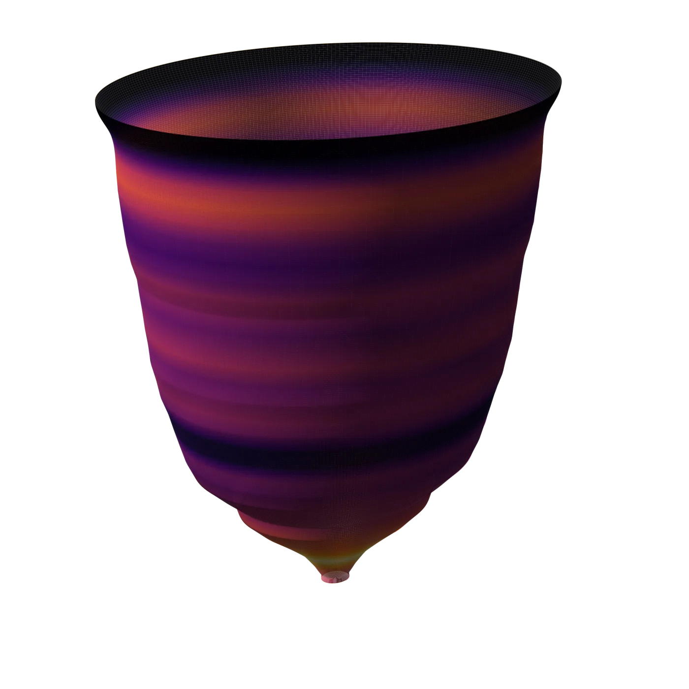

My Projects
I build scientific software, data systems, and computational infrastructure to make difficult environmental questions tractable.
My projects move from scientific ideas to working systems: packages, pipelines, cloud infrastructure, analytical methods, and tools other researchers can use.
See how I workThe range of the work
I do more than analyze a dataset. I move between scientific reasoning, computational methods, software architecture, and the infrastructure that makes those methods reusable.
Loading project evidence…
How I build
Technologies, with evidence
Select a technology to see the projects that demonstrate it. These are repository-backed associations, not self-assessed skill scores.
The work connects
Software becomes infrastructure. Infrastructure enables science. Scientific questions create new computational methods. Collaborators carry those methods into new problems.
Built in public
Repository facts and releases update from GitHub. The projects themselves are selected for substance, maturity, documentation, and their place in the larger system—not simply for the latest commit.
I couldn’t load the generated project evidence. The source links above remain available.